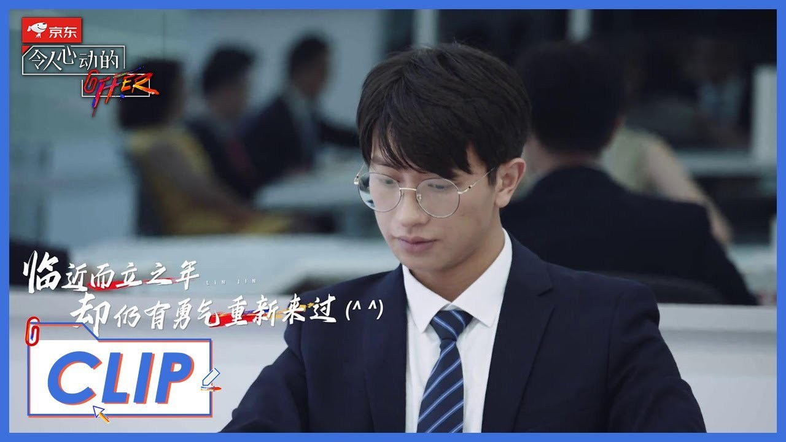

随笔：第4篇 -《令人心动的offer2》之关于丁辉我想说的话
本文写于 2020/12/13
关于丁辉我想说的话，一想到他的时候我的心会是蓝色的。因为苍穹无限高，令人向往，大海有容乃大，包容一切。
关于《令人心动的offer》这个节目，我是从第一季上船的，相信很多人跟我一样，对于第二季总有些缔结，于是乎会吐槽，“第一季才是白月光，永远不可替代”。但无论结局是不是真香警告，第二季还是让我们看到了不一样的一面，相比更加现实的职场，会停下来冷静思考。
节目一开播，最具有话题热度的非丁辉莫属，丁辉何许人也，普通本科，做过销售，背水一战考上华东政法大学研究生，一心想要踏足法律圈的男人。
这样的经历，引起了很多人的共鸣，逆袭也就成为了丁辉的标签，我们希望他逆袭，完成大部分人的心愿。可是现实中哪有这么多的逆袭，多的不过是默默，多的是屈服。所以我在想大家为什么喜欢，在电视剧里看到逆袭这样的场景，是因为他不常发生，有时候，可能，我们在等待逆袭的时间里，就已经无能为力了。
一想到丁辉我想说的话，你可能会被很多人寄予希望，你是一个挺有标志的这么一个同学，就是你不断地向上，向上，然后也非常努力，而且你自己说的背水一战，你会激励很多人，或者说更多的人知道，你的这些经历之后，他们会给你很多，说是丁辉就是我们的代表，丁辉就要怎么样，但是我觉得，你就是丁辉，你离开了这次实习经历，你就投入下一次工作，你得是你想成为的那个丁辉，别成为，大家希望丁辉成什么样的那个丁辉。
我会在想，我有好久好久没有丁辉过了，有这样的说法是，是在有一定的经历之后，或者现实一点说到达一定年纪之后，还有这样努力拼的韧劲，这一点真的很令人佩服，不是嘴上说说而已。希望自己当下能丁辉一把，也成为自己人生舞台上的丁辉。

“他翻山越岭而来，你们却怪他脚上沾上了泥土。”
当然现实中会有一部分人抨击这种丁辉式的背水一战，丁辉式的逆袭，但我不知道为什么很喜欢背水一战这个词，可能会给身边人带来压力，可是我真的觉得辛苦但会成长，我会很喜欢。
就，我的自我评判，是一定有问题的，但我短时间内还不想改，马上社会的毒打，就会帮我纠正的，然后丁辉这时候就会在我旁边讲，可能在别人眼里这是个缺点，但是我觉得有的时候，在我眼里我觉得就是优点，啊谢谢。
然后，朱一暄就很能引起我的共鸣了，我觉得就很互补好吧。小妹妹大哥哥，帮帮你。“作为老大哥帮小妹妹帮的很好啊”，“啊啊这是应该的”，“我不要他走”，“我用铅笔打草稿，我怕把你画很丑”，“没事，你就随便画，我觉得你画的都好看”，“我不想跟别的人分一组”，“你以后工作以后，会遇到各种各样的人，好吧，不是每一个人都像辉哥一样的，你要尝试接触不同的人”，“收到”，....... 。这些对话都很戳人，嗯，离别不说再见别再心酸，辉哥加油，江湖再见。
我：我是置身黑暗里的人，突然出现的一点光，似乎让一切都不太一样的了。
辉：这小家伙是我第一个想保护的人。
这样，我就可以把“丁辉”定义成为一个向往的苍穹也好，大海也罢，嗯，真的好好。